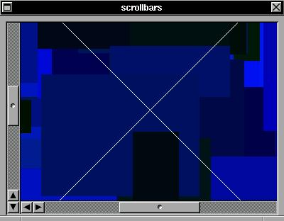

The X/Y scroll box is a serie of groups inside groups. This widget enable you to create a big drawable box and then just scroll this drawable with horizontal and vertical scrollbars. If you scroll the drawable area, expose events are generated do redraw the exposed surface. This widget will be enhanced in future versions to replace all other scroll widgets.SYNTAX
struct xtree *xyscroll(x,y,w,h,f,color,xdrawable,ydrawable);int x,y,w,h,color,xdrawable,ydrawable;
void (*f)(struct xtree *);
You can set a xdrawable size zero to hide the vertical scrollbar or a ydrawable size to zero to hide the horizontal scrollbar. All operations are automatic.EXAMPLE
This is a easy example: a window with a xyscroll box inside. If you move the scrollbar in any direction, the box inside the scrollbox is exposed and then the draw() function is called to draw the expose area.#include <xstep.h> void draw(struct xtree *t) { XSetForeground(display,t->gc,rand()%256); XFillRectangle(display,t->win,t->gc, t->aw/2+rand()%t->aw/2-rand()%t->aw/2, t->ah/2+rand()%t->ah/2-rand()%t->ah/2, rand()%t->aw/4, rand()%t->ah/4); XSetForeground(display,t->gc,white); XDrawLine(display,t->win,t->gc, 0,0,t->aw,t->ah); XDrawLine(display,t->win,t->gc, 0,t->ah,t->aw,0); } void xmain(int i,char **p) { animate=1; window_create(0,0,400,300,"scrollbars"); xyscroll_create(8,8,-8,0,draw,gray,1024,1024); }